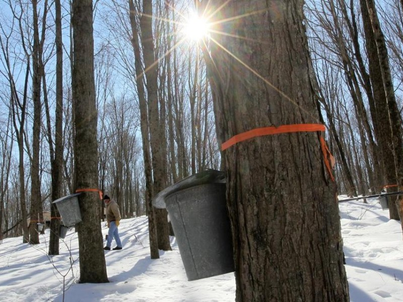

April 17, 2017
Time to Believe

Most Americans believe that Climate Change is real but according to data from the Yale Program on Climate Communications, many don’t think it will happen to them.
If the doomsday weather doesn’t worry them, with its already 4-fold increase in floods, droughts, wildfires, hurricanes and those pesky rising insurance payments! Then these two things might bring it home: Malaria & Maple Syrup.
With winters not as harsh, mosquitoes survive longer throughout the year and expand their geographic range. These insects will put millions of Americans at risk of acquiring Malaria, Zika and West Nile virus.
And imagine a world without coffee, champagne, cherries or maple syrup? These are just a few of the crops depending on specific weather patterns and timing of pollinators to save them.
Its time to be a believer.